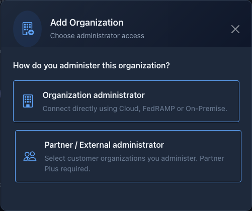
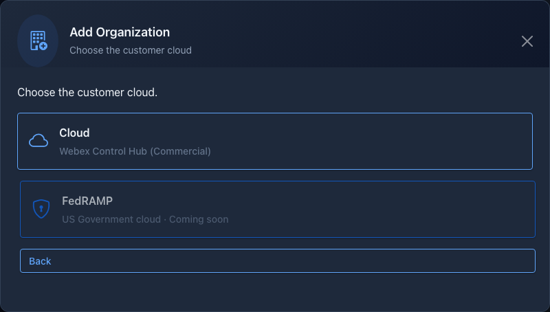
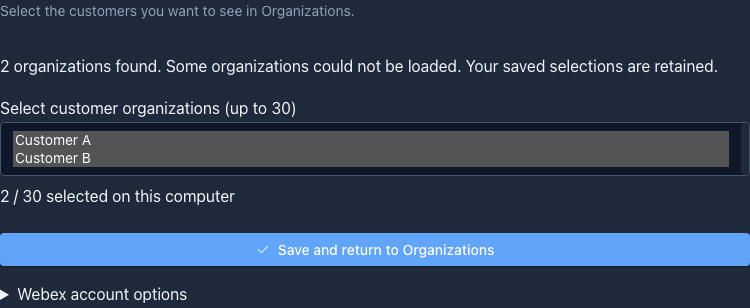
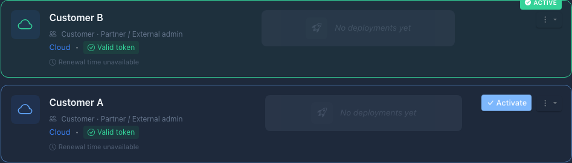

Try customer B
Choose another saved customer in the fast switcher. Confirm its active tick and load its inventory. Close and reopen standalone tool windows after switching customers.
Get comfortable with CE-Deploy’s new partner and external-administrator access, from your gifted membership to your first customer task.
Start the field guideThe beta release is being prepared. You can explore this guide now; wait for Chris to confirm the build is ready before starting the app exercises. The planned release link may show “Not Found” until it is published.
You’ll receive six months of Partner Plus as a thank-you for testing. Your feedback will help confirm customer discovery, everyday workflows and recovery in real partner environments.
Commercial Webex customer access. Partner and customer-assigned external administrators use the same CE-Deploy tools. Delegated FedRAMP is coming later.
Webex Messages: christno@cisco.com. Open Webex, start a message and find Chris using this address. The button copies the address; it does not send a message.
Activates Partner Plus and authorizes this computer.
Determines which customer organizations you can access.
The email addresses can be different. Activating membership does not grant Webex permissions.
Membership shows Partner Plus and a four-computer allowance. This gifted test does not require starting another trial.
Your gift provides six months of membership, but an individual offline entitlement lasts at most 30 days and renews while you remain eligible and online. A shorter Offline access until date is therefore normal. Gift-derived access must not extend beyond the gift’s BMC end date.
When the gift ends, Plus access depends on any other eligible membership or remaining trial. Otherwise Plus-only operations stop; your saved customer selections do not themselves grant access. The gift does not start a paid subscription from within CE-Deploy. Any existing paid subscription is separate.
The membership owner authorizes each activation, up to four computers. That computer’s user may then sign into Webex with their own account. On an employee’s laptop, use Finish owner setup after activation to finish the handoff. The owner will need to verify again for computer management. Each computer keeps its own customer selection.


Screenshots throughout this guide use demonstration data from beta builds. Small visual differences may appear in your release. Select an image to enlarge it.
Customer organizations load automatically after Webex sign-in. No manual token copy or paste is needed.
CE-Deploy combines available organizations from partner-admin and external-admin discovery. Your account may have different kinds of access to different customers.

The four computers share the membership’s activation allowance. Their customer lists are independent. Selecting or removing a customer in CE-Deploy does not grant or remove access in Control Hub.
Customer organizations use the familiar CE-Deploy target and result screens. Start with a read to confirm your customer and device selection.
xStatus Audio Volume for a permitted device that provides that status.xStatus Audio VolumeIf that API is unavailable on your test device, use an appropriate read you already know for it, or report the API response. CE-Deploy does not decide product support from a device-model list; the device and Webex determine the result.
You can load the correct customer’s inventory and obtain the expected response through the normal tools, without a “token required” prompt.
Only use a designated device where you have permission to change the volume. First read and record its original value. Run xCommand Audio Volume Set Level: 50, read back with xStatus Audio Volume, then restore the recorded original value and read it again.
Use the full command including Set Level:. Do not repeat an entire deployment blindly after a partial failure—inspect the returned device result first.

Choose another saved customer in the fast switcher. Confirm its active tick and load its inventory. Close and reopen standalone tool windows after switching customers.
Open a customer card’s menu and choose Refresh Token. Complete Webex sign-in if requested. Token status is refreshed for customers using that connection.
Choose Manage customer selection. The directory loads again automatically. Select newly available customers and save. Webex assignment changes can take time to appear.
Quit and reopen the installed app. Activate the saved customer, load its devices and repeat the read. Your membership and Webex connection are separate checks.
Send a Webex message to christno@cisco.com. A clear failure report is just as valuable as a pass. Nothing on this site submits your progress or sends a message automatically.
CE-Deploy Partner Plus beta App version: OS and version: Webex role: Partner Administrator / External administrator / Unsure Gifted Plus activation: Pass / Fail / Not tested Expected assigned customers found: Pass / Partial / Fail Correct customer devices loaded: Pass / Fail / Not tested Read-only task: Pass / Fail / Not tested Switch / refresh / restart: Pass / Fail / Not tested If something failed: Screen and action: Expected result: Actual result / sanitized error: Can you reproduce it? Other feedback:
Use aliases such as Customer A. Remove customer names, IDs, email addresses, tokens, verification codes and configuration secrets from screenshots and logs. Never send a token to troubleshoot this course.
Thank you for testing. Keep using your normal tools with permitted customers, and send Chris anything that feels unclear or behaves unexpectedly.
The release is planned but may not be published yet. Wait for Chris’s availability message. Don’t substitute an older release when testing these new capabilities.
Confirm that Chris issued the gift to the email you used for membership sign-in. Choose Refresh membership, then sign in again if prompted. Activate Partner Plus if offered. If it is still missing, send Chris the status message and app version. Do not start a trial to work around a missing gift.
Check your spam or junk folder and confirm the address shown in the sign-in screen. Use Resend code when available and use the newest code. Never share the code with support.
Check the Webex account you connected and its actual assignments. Partner-admin and external-admin directories can respond differently. Reopen Manage customer selection and use Try again if offered. If one source fails, successful results may still appear and saved selections are retained. Report expected versus found counts using aliases; a partial list alone does not prove lost permission.
Confirm the active customer and use its card’s Refresh Token action. Close and reopen standalone tools after changing customers. A 403 can indicate insufficient Webex permissions; reconnecting cannot grant a missing role. If it persists, report the tool, action and sanitized message instead of pasting a token manually.
Check the selected customer, deployment target and any filters. Try a known customer device. An empty inventory and a failed request are different results—include the exact status message in your report. Don’t switch to an unrelated organization just to make a deployment proceed.
In Membership, open Manage computers → Load computers. Verify the membership owner if requested. Compare the short identifiers and reclaim only a computer you intend to deactivate, then activate the replacement. Signing out does not free a slot. Saved work is separate from membership activation.